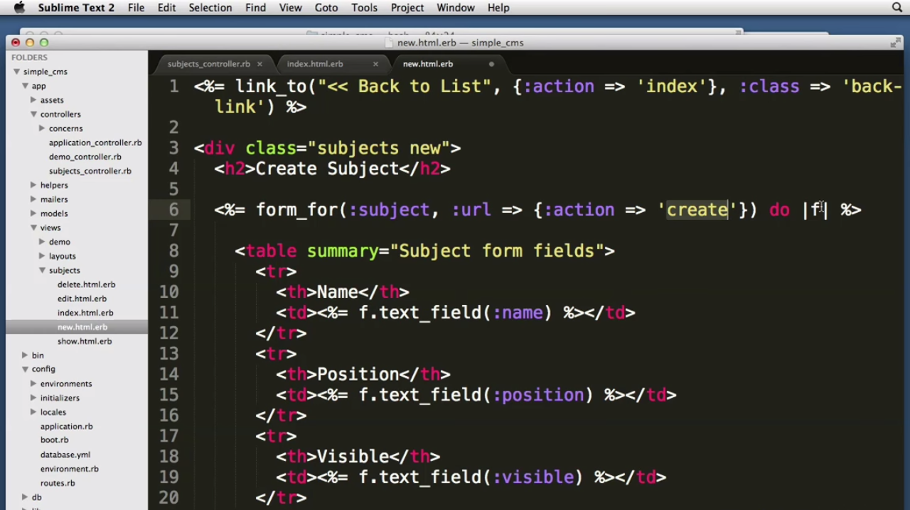

What is Rails?
8/29/15
Rails is a framework what functions as a software library. The Rails framework is a platform that allows Ruby, HTML, CSS, and JavaScript to interact with eachother conveniently. Ruby on Rails developers claim that rails enables its user to create web applications in less time by writing less code when compared to other languages/frameworks. Rails is "opinionated software" which means it makes assumptions about the best way to approach a problem. These assumptions will assist the user by creating things in less time.
This is an example of what working with Rails might look like. Your library of files are on the left side of the screen which helps organize your application.